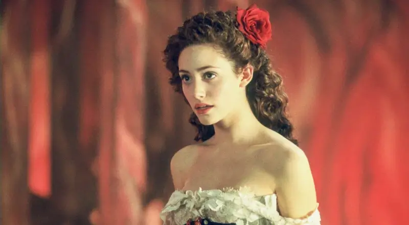
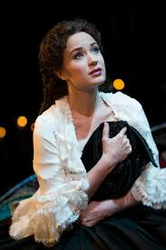
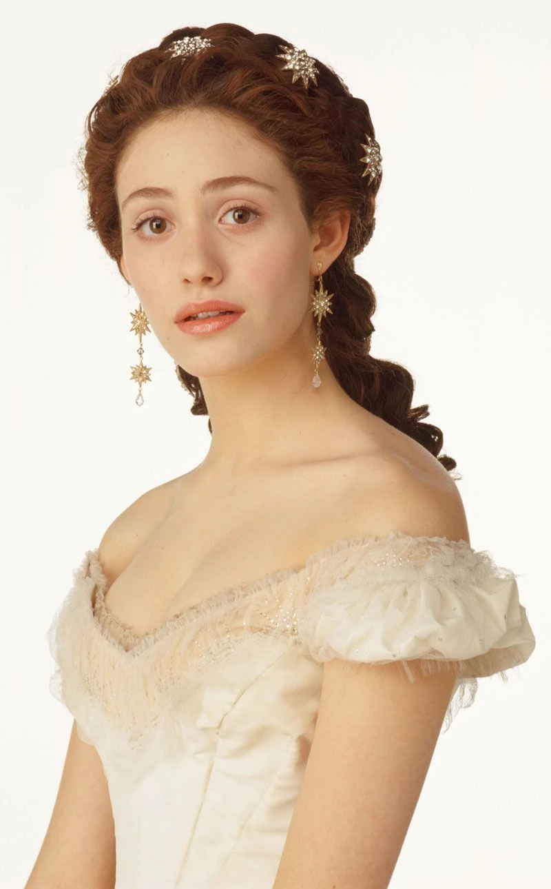

Once upon a time in the bustling streets of Paris, a young woman named Christine Daaé captivated the hearts of all who heard her sing. She was a rising star at the Paris Opera House, where the walls echoed with the voices of legendary performers and the music of countless composers. But none were as mysterious or as compelling as the one who had taken a special interest in Christine—an unseen mentor who called himself the Angel of Music. This mentor was none other than the Phantom, a shadowy figure who dwelled in the hidden catacombs beneath the opera house. His face, concealed by a mask, held a story of pain and loneliness, a tragic past that had driven him into the darkness. Yet, despite his sorrow, he was drawn to Christine’s voice—a voice that shimmered with purity and promise. Under the Phantom's guidance, Christine's talents blossomed. She mesmerized audiences with her performances, but her heart was torn between the mysterious Angel of Music and Raoul, her childhood friend who had returned to claim her love. As the Phantom's obsession with Christine grew, so did his desire to keep her for himself, no matter the cost. One fateful night, the opera house was alive with anticipation for a grand performance. But the Phantom had other plans. He abducted Christine, taking her to his underground lair, a world of shadows where he believed they could be together, free from the world above. But Christine, though she pitied him, could not return his love. In the final confrontation, Raoul bravely ventured into the Phantom's lair to rescue Christine. With emotions running high, Christine made a choice that would change everything. She showed the Phantom compassion, giving him a kiss that melted the walls of his bitterness and pain. In that moment, the Phantom realized that love could not be forced or taken—it had to be given freely. With a heavy heart, the Phantom released Christine and Raoul, choosing to vanish into the night rather than stand in the way of their happiness. As they left, the opera house returned to its former grandeur, but the memory of the Phantom lingered like a haunting melody. Christine’s voice soared to new heights, but she never forgot the Phantom, the man who had shown her the depths of passion and the true meaning of love. And so, the story of the Phantom of the Opera lived on, a tale of beauty, darkness, and redemption, set to the music of the night.
  